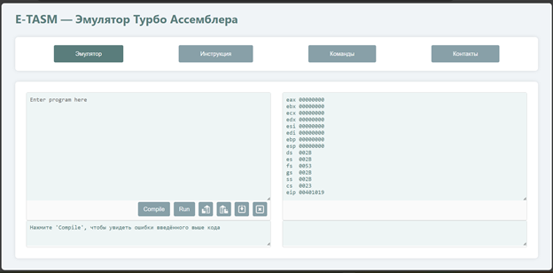

Добро пожаловать
При переходе по ссылке на сайт пользователь сталкивается с его главной страницей, которая при первом взгляде переполнена информацией для неподготовленного зрителя. Чтобы данную ситуацию исправить рекомендовано обратиться во вкладку «Инструкция», которая включает в себя: описание страниц эмулятора, в том числе и страницы с самим эмулятором ассемблерного кода, рекомендации по использованию приложения и по решению возникших трудностей при работе с эмулируемой средой.

Рисунок — Страница «Инструкция»
1. Страница «Эмулятор»
Инструкция для Эмулятор
1.1. Элемент «Меню»
Инструкция "Меню"
1.2. Элемент «Ввод программы»
Инструкция "Ввод программы"
1.3. Элемент «Вывод результата выполнения программы»
Инструкция "Вывод результата"
Советы и рекомендации
Инструкция "Советы и рекомендации"
2. Страница «Команды»
Инструкция "Команды"
2.1. Элемент «Навигация»
Инструкция "Навигация"
2.2. Элемент «Таблица команд»
Инструкция "Таблица команд"
3. Страница «Контакты»
Инструкция "Контакты"
Ссылки и приложения
Ссылки и приложения